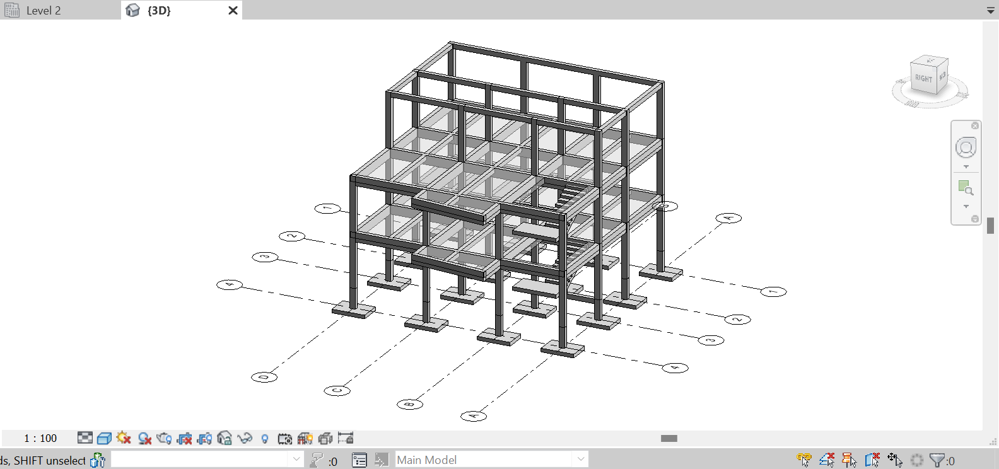
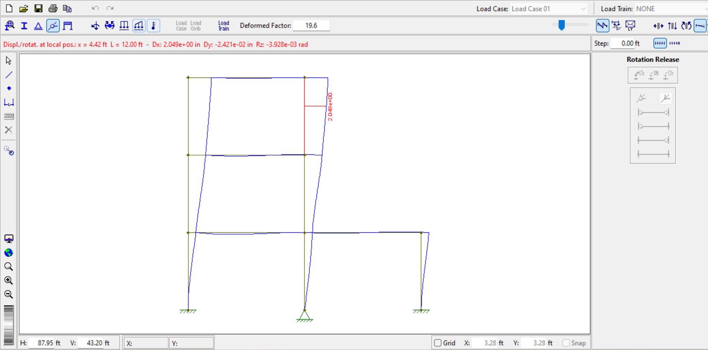

Having learned the basics of Revit in my free time, I can change materials and cross-sections of beams and columns, as well as implement levels and grids to easily place columns and organize the structure.
I can also incorporate some more complex features into a structural design such as stairs and unperpendicular beams. With this experience in 3D modeling software, I am confident I have the fundamentals needed to develop buildings and bridges in Finite Element Analysis.
I have used Ftool to evaluate the stresses and strains of members within 2D structures. Using shear and fixed connections, I observe how well moments are distrbuted throughout the members and how differing connections affect overall deflection.
I appreciate Ftool for its simple learning process and the path it provides into 3D structural analysis.
Curently the captain of the Timber Strong Design Team at the University of Florida, I am developing and completing statics calculations for a two-story wooden structure that will be presented against other universities in March of 2024. For my calculations, I am following the National Design Specification, using the constants needed to find accurate design strengths according to moisture, temperature, and repetition of load, and I am using Stiffness Method to solve indeterminate components. Loads due to seismic and wind uplift conditions are also considered. After completing the physical calculations, the structure will be evaluated for its cost efficiency and environmental impact.